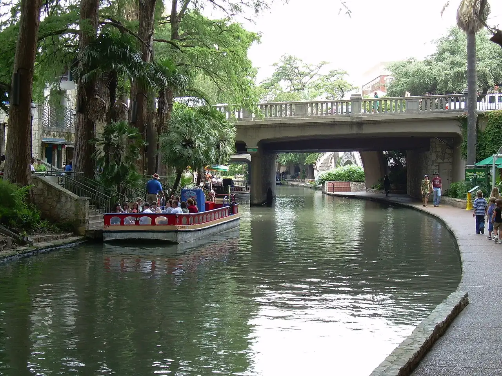

Choose a developed walking tour or an Adventure Tour only after checking age, physical demands, clothing, waiver, duration, and refund terms.
San Antonio, Texas
Things to Do in San Antonio With Teens: 10 Picks by Trip Style
Researched with AI (Miles Rowan) · checked against official pages · How we check
Let the older child choose one anchor, then compare 10 options by teen payoff, time, cost, area, flexibility, mixed-age fit, and the exact current check that can change the plan.

At a glance: 10 San Antonio picks for teens, compared by teen payoff, time and cost, area and flexibility.
Free: Mission San José, the Alamo church (exhibit paid), browsing the Pearl and browsing Southtown and Blue Star. The rest cost money; each card says what to check before you buy.
Attraction facts and official sources checked: July 27, 2026
Teen fit, time, cost class, flexibility, and mixed-age labels are Family Tripwise editorial estimates. Check the exact ticket, tour, height or minor rule, effects, weather, access, schedule, and route before committing.
Compare teen activities
Teen activity decision table
Scan the teen reason first, then the decisive current check. Time, cost class, area, flexibility, and mixed-age fit are editorial estimates, not venue guarantees.
| Activity | Teen reason | Time / cost | Area / format | Flexibility | Pair nearby | Check before choosing |
|---|---|---|---|---|---|---|
| Natural Bridge Caverns, exact tour | Caves, geology, and an optional hands-on challenge instead of a generic sightseeing stop | 2-4 hrs plus drive / premium paid | North of city / developed or Adventure Tour | Low | Low-key meal or hotel reset | Exact tour, minimum age, physical fit, clothing, waiver, availability, and refund rule |
| Six Flags Fiesta Texas | Coasters and thrill rides can justify one teen-owned full day | Half-full day / premium paid | La Cantera / outdoor theme park | Low | Hotel or La Cantera meal | Calendar, ride closures, exact height rules, weather, ticket scope, and chaperone policy |
| Andretti Indoor Karting & Games | Competitive racing, VR, laser tag, bowling, and arcade choices work as a heat or rain pivot | 1-4 hrs / paid by activity | The Rim / indoor entertainment | High | The Rim or La Cantera meal | Exact activity, height or license rule, waiver, clothing, walk-in availability, and total spend |
| SeaWorld San Antonio | Coasters, animal presentations, and optional water-park scope support different teen interests | Half-full day / premium paid | Westover Hills / outdoor theme park | Low | West-side hotel reset | Park versus Aquatica ticket, ride heights, showtimes, weather, closures, and active chaperone policy |
| Alamo church and Ralston Family Collections Center | Artifacts and one defined story give Downtown history a concrete purpose | 1-2.5 hrs / free church plus paid exhibit | Downtown / historic site and indoor exhibit | Medium | GO RIO or early meal | Free church reservation, exact paid exhibit, hours, entry time, content interest, and construction access |
| Mission San Jose or one selected mission | A free World Heritage site, architecture, and self-guided or ranger context without a paid attraction | 1.5-3 hrs / free | Mission Reach / mixed indoor-outdoor historic site | Medium | Southtown meal | Chosen site, visitor-center and program hours, heat, high-water closures, transport, and return plan |
| Hopscotch San Antonio | Immersive installations and photos create a contained indoor visual stop | 60-90 min / paid | Downtown / indoor art experience | Medium | Travis Park or Downtown meal | Advance ticket, child-ticket cutoff, adult-only hours, current installations, effects, and parking |
| GO RIO narrated cruise | A seated 35-minute orientation supplies city context without another long walking block | About 35 min plus wait / paid | Downtown River Walk / open-air cruise | Medium | Alamo or Downtown meal | Current hours, boarding location, wait, weather, river closure, and return to the next stop |
| Pearl and Museum Reach, one teen-chosen stop | Food, shops, photos, market timing, and river space offer a lower-pressure reset | 1-3 hrs / free to browse; food varies | Pearl / open district and river corridor | High | SAMA or hotel reset | Chosen shop, meal or event, market date, heat, parking or ride plan, and return |
| Southtown and Blue Star, one selected gallery or food stop | Murals, independent spaces, photos, and food can feel more self-directed than another major attraction | 1-3 hrs / free to browse; purchases vary | Southtown / neighborhood block | High | Mission San Jose or Downtown | Exact gallery or shop hours, event date, weather, parking, walking limit, and evening return |
Teen quick picks
Five ways to let the teen choose the anchor
Choose one meaningful payoff before filling the day. The answer depends on the teen's interest, exact ticket, trip base, heat, budget, and sibling fit rather than a universal ranking.
Compare the exact ride priorities, height rules, operating calendar, heat exposure, ticket scope, and location before choosing the park.
Use karting, laser tag, VR, bowling, or arcade time when the exact height, license, waiver, clothing, and price rules fit the group.
Choose artifacts and one paid exhibit, or one free mission site and ranger program; do not turn five missions into a forced checklist.
Let the teen choose immersive art, a narrated cruise, a food stop, shops, photos, or a selected gallery, then keep the route bounded.
High-friction choices
Five choices that need an exact decision
All 10 choices are compared above. These five get more space because the tour, ride rule, waiver, ticket scope, or minor policy can materially change the family's answer.
Natural Bridge Caverns, exact tour
Why consider it
A cave tour gives adventure-oriented teens a destination-specific reason to leave the city center. Best when the family chooses between a developed walking tour and a more demanding Adventure Tour before buying.
Main tradeoff
The checked Adventure Tours list a minimum age of eight, moderate-to-hard physical demands, specific clothing, a waiver, minor accompaniment, small groups, advance payment, and restrictive refund terms.
How to plan it
Open the exact tour page together and match duration, physical fit, clothing, age, and booking terms to the whole group. Bring the listed clothing and change-of-clothes setup when using an Adventure Tour; keep the evening light. Recheck exact tour inventory, requirements, weather, waiver, price, and cancellation terms near the visit.
Pair nearby
Pair with one meal or hotel reset.
Six Flags Fiesta Texas
Why consider it
A teen who actively wants coasters may prefer one committed park day to several smaller city stops. Best when the must-ride list and every rider's current eligibility justify the cost and heat exposure.
Main tradeoff
Ride-specific height and physical rules, closures, weather, operating dates, ticket products, and chaperone policies can change the usable day.
How to plan it
Have the teen choose three priority rides and compare each current rule before buying. Treat the park as the anchor; do not add a cave tour or long Downtown block. Recheck calendar, ride pages, closures, height and access guide, weather, tickets, and chaperone policy.
Pair nearby
Pair with a simple La Cantera meal or hotel reset.
Andretti Indoor Karting & Games
Why consider it
The family can choose racing, laser tag, VR, bowling, or arcade time instead of buying one broad attraction ticket. Best for a competitive teen and mixed-age group willing to choose the exact activity and spend limit.
Main tradeoff
Intermediate karting currently lists a 54-inch minimum and recommended age 12; adult racing has a separate license/age rule. Minors need an adult-completed waiver, and clothing rules apply.
How to plan it
Select the race or attraction first, complete the current waiver correctly, and price the group's actual choices. Wear flat closed-toe shoes for racing and set the arcade or activity budget before arrival. Recheck pricing, height or license rule, waiver, clothing, hours, and walk-in availability.
Pair nearby
Pair with one nearby meal.
SeaWorld San Antonio
Why consider it
The same park can serve ride-focused, animal-focused, or water-park teens, but those are different days. Best when the family agrees on park scope and checks each priority ride or program.
Main tradeoff
SeaWorld and Aquatica ticket scope differs; ride heights, interaction rules, weather, closures, food rules, and an active chaperone policy can affect the day.
How to plan it
Choose SeaWorld only or the combined water-park product, then compare the teen's three priorities with current rules. Build a full-day heat and meal plan rather than treating the park as a quick add-on. Recheck hours, ticket scope, ride rules, showtimes, weather policy, closures, and chaperone policy.
Pair nearby
Pair with a west-side hotel reset.
Alamo or San Antonio Missions
Why consider it
A defined artifact, architecture, or World Heritage mission gives history a concrete teen-selected purpose. Best when the teen chooses the Alamo exhibit or one mission site rather than receiving a long history checklist.
Main tradeoff
The Alamo church uses a free reservation while the Collections Center is a separate paid product. NPS site, visitor-center, and ranger-program hours differ; summer heat and high-water closures can affect Mission Reach.
How to plan it
Choose one product or site, confirm the exact entry and program, and limit the outdoor route to what current conditions support. Use one nearby meal or cruise as the flexible follow-up instead of adding another large museum. Recheck reservation, paid exhibit, NPS hours, programs, heat, closures, transport, and return plan.
Pair nearby
Pair the Alamo with GO RIO; pair Mission San Jose with Southtown.
Bounded teen routes
Three route shapes with one real anchor
Adventure or park day
Choose one exact Natural Bridge Caverns tour, Six Flags, or SeaWorld as the anchor. Add only a simple meal or hotel reset; do not combine two distant premium days.
Downtown history and visual route
Choose the Alamo exhibit or Hopscotch, then add GO RIO and one meal only if current entry times, weather, and walking remain practical.
Missions, Southtown, or Pearl route
Choose one mission site plus one Southtown stop, or use Pearl and Museum Reach as a food/photo reset. Confirm exact openings and the return rather than wandering across all three areas.
Plan the cluster
Use the teen page with the broader family guide
All-ages activity hub
Use the 13-choice guide when younger siblings, grandparents, toddler pacing, free choices, or a broader first-trip shortlist change the answer.
Family hotel comparison
Compare 12 named properties by trip style, room setup, broad nightly range, pool or resort role, and bounded online-review observations.
Stay-area guide
Choose the base before locking a teen route; Downtown, Pearl, younger-child corridors, SeaWorld, and La Cantera create different returns.
Family itinerary
Turn one teen-selected anchor, meals, heat, weather, and sibling alternatives into a realistic one-, two-, or three-day sequence.
Before locking the plan
Four current checks that can change the choice
Exact cave or ride product
Natural Bridge tour types, Six Flags rides, and SeaWorld or Aquatica products are not interchangeable. Check the selected ticket, rule, calendar, chaperone policy, and weather response.
Natural Bridge Adventure Tours Six Flags FAQ Six Flags park and chaperone policy SeaWorld FAQ and chaperone policy
Karting, immersive art, and minor rules
Andretti activities use different height, license, clothing, and waiver rules. Hopscotch uses advance tickets and lists child-ticket and adult-only-hour boundaries.
Andretti pricing and activity rules Andretti FAQ Hopscotch FAQ Hopscotch San Antonio hours
History product and site hours
The Alamo church, paid Collections Center, and NPS mission sites have different entry, hours, programs, heat exposure, and closure conditions.
Alamo free church entry Alamo Collections Center San Antonio Missions basic information San Antonio Missions directions and conditions
Cruise, district, and return plan
GO RIO duration, boarding, and river conditions, Pearl event timing, Southtown openings, heat, parking, and the route back can change a flexible city block.
GO RIO narrated cruise overview GO RIO visitor information GO RIO FAQ Pearl Farmers Market Visit San Antonio teen itinerary
Common planning questions
San Antonio with teens FAQ
What are useful San Antonio starting points for teens?
Start with the teen's interest: an exact Natural Bridge cave tour for adventure, Six Flags or SeaWorld for a park day, Andretti for indoor competition, the Alamo or Mission San Jose for a defined history mission, or Hopscotch, GO RIO, Pearl, and Southtown for art, food, photos, and lower-pressure city time.
How should a mixed-age family use this page?
Let the teen choose one anchor, then use the all-ages guide or a split plan when height, physical demands, effects, duration, ticket cost, or younger-child interests do not fit everyone.
Can teenagers visit San Antonio attractions on their own?
This guide does not make independent-roaming or safety assurances. Check the exact venue's minor or chaperone rule, route, transport conditions, time of day, and your own family's supervision plan.
Sources checked
Official sources and licensing notes
Official attraction, park, historic-site, district, destination, and licensing sources checked July 27, 2026. Reopen the exact ticket, tour, ride, event, route, and policy near the visit because prices, inventory, rules, weather, hours, and access can change.
- Natural Bridge Caverns Adventure Tours
- Six Flags Fiesta Texas FAQ
- Six Flags Fiesta Texas accessibility
- Six Flags Fiesta Texas park and chaperone policy
- Six Flags Fiesta Texas hours and calendar
- Andretti San Antonio pricing and activity rules
- Andretti San Antonio FAQ
- SeaWorld San Antonio FAQ and chaperone policy
- SeaWorld San Antonio weather policy
- Alamo free church entry
- Alamo Collections Center
- San Antonio Missions basic information
- San Antonio Missions directions and conditions
- Hopscotch FAQ
- Hopscotch San Antonio hours
- GO RIO visitor information
- GO RIO FAQ
- GO RIO narrated cruise overview
- Pearl Farmers Market
- Visit San Antonio teen itinerary
- San Antonio River Walk photo source and attribution
- CC BY-SA 2.0 license